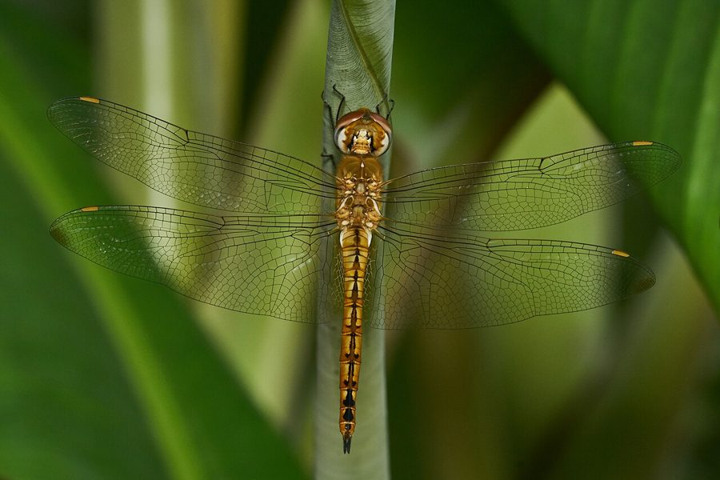

सुनहरी व्याधपतंगWandering Glider
Pantala flavescens · Libellulidae · INS-0002

- Scientific name
- Pantala flavescens (Fabricius, 1798)
- Family
- Libellulidae
- Hindi
- सुनहरी व्याधपतंग
- Status here
- native
- IUCN
- LC
When to look कब देखें
Expected mainly in May, June, July, August, September, October, November.
सुनहरी व्याधपतंग / Wandering Glider
Pantala flavescens (Fabricius, 1798) — Libellulidae
सुनहरी व्याधपतंग — मानसून से पहले तालाब के ऊपर सुनहरे झुंड में उड़ती यह व्याधपतंग अफ्रीका से आई हो सकती है। यह पृथ्वी का सबसे लम्बी यात्रा करने वाला कीट है — मानसूनी हवाओं पर सवार होकर 3,500 किलोमीटर समुद्र पार करता है। सुनहरा-पीला शरीर, चौड़े पिछले पंख जो इसे बिना थके हवा में तैरने देते हैं। लार्वा तालाब में रहकर मच्छर के लार्वा खाता है; वयस्क हवा में मच्छर और मक्खियाँ पकड़ता है — एक व्याधपतंग रोज़ सैकड़ों मच्छर। गाँव के तालाब के लिए यह प्राकृतिक स्वास्थ्य-रक्षक है।
Quick Identification त्वरित पहचान
| Feature | Description |
|---|---|
| Size | Body 38–48 mm; wingspan 70–80 mm |
| Colour | Golden-yellow body; wings with golden tinge at base, clear at tips |
| Hindwings | Notably broader than most dragonflies — structural key enabling long-distance gliding |
| Flight | Glides in wide slow circles; continuous effortless flight; rarely perches for long |
| Behaviour | Seen in large swarms over ponds, open fields, and open sky |
| Eyes | Large, reddish-brown, meeting at top of head |
Field tip: If it is golden-yellow, large, seen in swarms over open water or fields, and glides rather than hovers — it is almost certainly Pantala flavescens. The broad hindwing is visible even in flight as a notably wider rear wing relative to the forewing.
Morphology आकारिकी
| Measurement | Range |
|---|---|
| Body length (adult) | 38–48 mm |
| Wingspan | 70–80 mm |
| Forewing length | 32–40 mm |
Body: Slender, golden-yellow. Abdomen slightly darker towards the tip with faint dark markings at segment joints. Male has a brighter golden abdomen; female is more yellowish-green. Both sexes share the same flight behaviour.
Wings: All four wings broad at the base, particularly the hindwings, which are proportionally wider than those of almost any other dragonfly. Wings have a yellowish tint at the base fading to clear at the tips. This broad hindwing combined with a lightweight body provides the structural basis for extraordinary gliding endurance across open ocean.
Eyes: Large, reddish-brown, meeting along the top of the head. Provide nearly 360° vision — impossible to approach from behind without detection.
Legs: Short and spiny; not used for walking. Form a basket-trap in flight to intercept prey mid-air.
Larva (naiad): Squat, brown, aquatic; short abdomen and wide thorax; passes through 9–12 instars. Preys on aquatic invertebrates and mosquito larvae.
Ecological Role पारिस्थितिक भूमिका
Aerial predator — mosquito controller. Pantala flavescens catches prey entirely in flight, using its leg-basket to intercept mosquitoes, small flies, gnats, termite alates, and other soft-bodied insects. It is an extraordinarily efficient hunter — catch rate exceeds 90% per attempt, one of the highest of any predator on Earth. A single adult can consume hundreds of mosquitoes per day. In village ponds, this constitutes meaningful natural biological control of Anopheles, Culex, and Aedes mosquitoes — the vectors of malaria, dengue, and filariasis.
Aquatic predator (larval stage). The larva lives in ponds and seasonal pools, feeding on mosquito larvae, small aquatic insects, and small tadpoles. Both life stages — aquatic larva and aerial adult — suppress mosquito populations, making this species doubly valuable as a public health ally.
Prey for aerial insectivores. Swallows, bee-eaters, and Indian Rollers hunt dragonfly swarms. The seasonal appearance of large Pantala swarms is a predictable food bonanza for insectivorous birds — a direct ecological link between the dragonfly migration and the foraging ecology of species that time their breeding to the monsoon.
The longest insect migration on Earth. Pantala flavescens performs the longest confirmed insect migration on the planet. Isotope analysis of wing tissue has traced their origin to East Africa. The route follows the Inter-Tropical Convergence Zone: East Africa → India on the south-west monsoon winds (approximately 3,500 km over the open Indian Ocean), then India → Southeast Asia and back. The dragonflies ride high-altitude wind currents at 1,000–2,000 m, invisible from below. No individual completes the full circuit — it takes multiple generations across a year, with each generation advancing one leg of the journey. The swarms seen over UP ponds in May–June are newly arrived migrants or locally hatched individuals preparing to breed in freshly filled seasonal pools — pools that appeared after the same rains that carried their parents here.
Life Cycle / Phenology जीवन चक्र
- Egg: Laid directly onto the water surface by the female dipping her abdomen in flight; hatch in 1–3 weeks
- Larva (naiad): Aquatic; lives in pond or seasonal pool; passes through 9–12 instars in 5–8 weeks — extremely fast development, adapted for temporary water bodies that may dry up
- Adult: Emerges at the water's edge, dries wings, and begins flying within hours; lives 4–8 weeks
- Pre-monsoon swarms: May–June — migrants arriving on south-west monsoon winds and locally hatched early adults
- Peak: July–November — breeding in seasonal monsoon pools; adults abundant
- Decline: Numbers drop sharply from November; absent or very scarce December–April
Host Plants or Prey आहार
Prey (adults — aerial):
- Mosquitoes (Anopheles, Culex, Aedes spp.) — primary prey
- Small flies (Diptera)
- Flying ants and termite alates (Hymenoptera)
- Gnats and midges (Chironomidae)
- Small moths (micro-Lepidoptera)
- Other small soft-bodied flying insects
Prey (larvae — aquatic):
- Mosquito larvae — primary aquatic prey
- Small aquatic insect nymphs (Ephemeroptera, Chironomidae)
- Small tadpoles
- Aquatic worms and small crustaceans
Predators / Natural Enemies शत्रु
| Predator | Notes |
|---|---|
| Swallows (Hirundo spp.) | Pursue swarms aerially; timing coincides with swarm peaks |
| Bee-eaters (Merops spp.) | Specialised aerial hunters; sally from exposed perch to take individuals |
| Indian Roller (Coracias benghalensis) | Catches from perch; takes individuals at swarm edges |
| Large spiders | Catch individuals that perch in vegetation near water |
| Other large dragonflies | Occasional cannibalism of smaller individuals |
Agricultural / Human Relevance कृषि प्रासंगिकता
Mosquito control — public health value. Natural biological control of malaria, dengue, and filariasis vectors in and around village ponds benefits rural eastern UP directly. Protecting dragonfly breeding habitat around ponds is one of the most cost-effective public health investments available at village level.
Rice field ecology. Dragonfly larvae in irrigated rice fields consume mosquito larvae and small pest invertebrates. Fields with healthy dragonfly populations carry a lower mosquito burden throughout the growing season.
Threat from pesticide use near water. Broad-spectrum insecticide applications in and near ponds kill dragonfly larvae along with target pest species — disrupting the natural mosquito control cycle. This is ecologically self-defeating: the pesticide removes the predator (dragonfly larva) that suppresses the pest (mosquito larva), allowing mosquito populations to rebound faster.
Seasonal water body conservation. Seasonal monsoon pools — low-lying field corners, roadside depressions, temporary wetlands — are critical breeding habitat for Pantala. Filling these for construction or agriculture removes breeding sites and reduces dragonfly populations for the following monsoon.
Expected Locally स्थानीय रूप से अपेक्षित
Not a field record. Written from published accounts for eastern Uttar Pradesh. No confirmed local sighting yet — if you have seen it, that is what the atlas needs.
अभी तक स्थानीय पुष्टि नहीं। यह विवरण प्रकाशित स्रोतों से है, किसी अवलोकन से नहीं।
Large golden swarms circling above ponds in Basti district are one of the most visible insect spectacles of the monsoon. First mass swarms appear in May–June with the onset of pre-monsoon conditions — often before the rains fully break — with 50–200+ individuals circling 3–10 m above water surfaces in continuous sweeping flight. Breeding in seasonal monsoon pools begins July–August; by late July, larvae can be found in any established seasonal pool as squat brown nymphs on the pond bottom. Adults remain abundant from July through October and are commonly seen resting on vegetation near water. Numbers decline sharply from November as temperatures drop. The species is immediately recognisable to most village residents (peeli dragonfly, sone ki patang) without most people knowing its extraordinary intercontinental migratory biology.
Distribution वितरण
Global range: Circumtropical global distribution; occurs across all continents except Antarctica, migrating across major oceans and landmasses.
In India: Found throughout the country, from sea level up to high elevations in the Himalayas (>3,000 m) during seasonal movements.
In Uttar Pradesh: Present state-wide during the monsoon and post-monsoon seasons, associated with agricultural areas and wetlands.
In Basti district / eastern UP: Highly common seasonal visitor; abundant from July to November, particularly over paddy fields and standing water bodies.
Range notes: No significant range changes documented.
Research Questions शोध प्रश्न
- When do the first swarms appear each year over your local ponds? Record the date and weather conditions — builds a phenology indicator dataset usable for climate monitoring.
- How large are the swarms? Estimate numbers (<50, 50–200, >200) and note pond characteristics — identifies preferred breeding habitat.
- Do swallows and bee-eaters follow the swarms? Note bird activity when swarms are present versus absent over the same pond — documents the food web connection.
- Which ponds have the most dragonflies? Compare ponds with different vegetation cover, depth, and pesticide exposure — tests habitat quality as a driver.
- Are dragonfly numbers declining? Ask elders whether they remember larger swarms in the past — oral history is valid phenological data when combined with current observations.
Similar Species मिलती-जुलती प्रजातियाँ
| Species | Key Difference |
|---|---|
| Trithemis aurora (Crimson Marsh Glider) | Male bright red, not golden; female yellow-brown; perches frequently |
| Orthetrum sabina (Slender Skimmer) | Green-and-black body; narrower wings; no golden wing tinge |
| Brachythemis contaminata (Ruddy Marsh Skimmer) | Smaller; orange-red body; broader wings but deeper orange-red colouration |
Taxonomy & Classification वर्गीकरण
Original description. Pantala flavescens was described by Johan Christian Fabricius in 1798 under the name Libellula flavescens in his Entomologia Systematica (Supplement, page 285). The genus Pantala was erected by Hermann August Hagen in 1861. The species epithet flavescens means "yellowish" in Latin, referring to its body coloration.
Subspecies. Monotypic — no subspecies are currently recognised.
Family and order placement. Pantala belongs to the family Libellulidae (skimmers or perchers), which is the largest dragonfly family in the order Odonata, containing over 1,000 species. Within Libellulidae, Pantala is situated in the subfamily Pantalinae.
Phylogenetic notes. Genetic studies (Troast et al. 2016) show high gene flow and global panmixia due to its extraordinary migratory capability, meaning populations across different continents are not genetically distinct. No major taxonomic controversies are currently active for this species.
IUCN status rationale. Assessed as Least Concern (LC). The species has an extremely large global range, massive population sizes, and no known threats, thriving in human-modified landscapes and artificial water bodies.
Photo Gallery फोटो गैलरी
References संदर्भ
- Fabricius, J.C. (1798). Entomologiae Systematicae Supplementum. Proft et Storch, Hafniae. [original description]
- Hagen, H.A. (1861). Synopsis of the Neuroptera of North America. Smithsonian Institution, Washington. [genus description]
- Hobson, K.A. et al. (2012). A dragonfly (Pantala flavescens) undertakes the world's longest insect migration. PLoS ONE, 7(5), e37130.
- Troast, D. et al. (2016). A global population genetic study of Pantala flavescens. PLoS ONE, 11(3), e0150115.
- Zoological Survey of India — Fauna of Uttar Pradesh, Insecta: Odonata.
- GBIF Occurrence Data — Pantala flavescens, Uttar Pradesh (2000–2024).
Source file: species/fauna/insects/wandering_glider.md